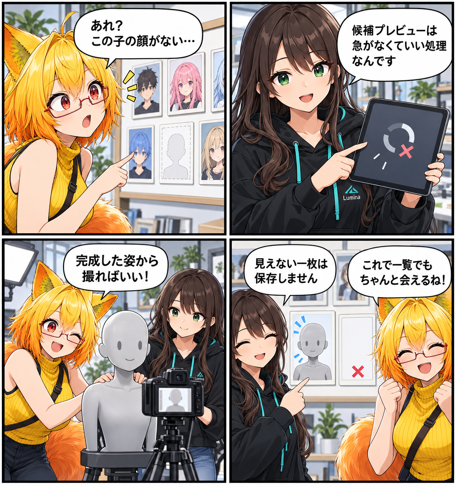

空っぽの枠に、もう一度顔を映す日
ライブラリに並ぶアバターの顔写真は、最初の出会いの一枚です。今回はVRMをVABへ変換するとき、候補プレビューがまだできていなくても、完成済みアバターからサムネイルを残せるようにしました。

候補の一枚を、最終成果の前提にしない
取り込み中の候補プレビューは、画面表示を待たせない非同期処理です。ユーザーが取り込みを確定すれば、プレビューは完了前に中断されることがあります。しかし、変換後のVABにはライブラリで使うサムネイルが必要です。候補プレビューだけを頼りにすると、その一枚が欠ける経路が残っていました。
そこで、既存のサムネイルデータやファイルがない場合だけ、変換直前の完成済みアバターを専用カメラでバストアップ撮影し、その画像をVABへ渡すようにしました。候補表示は軽やかなまま、保存するアバターには必要な顔写真を確保します。
「白い」だけでは、成功とは限らない
オフスクリーンのSRP描画が失敗すると、透明な画像だけでなく、ほぼ全面が同じ色の画像が返る場合があります。そこで撮影結果は、可視ピクセルがあるかに加え、ほぼ不透明かつほぼ単色ではないかも確認します。失敗した一枚を白いサムネイルとしてキャッシュしないための小さな見張りです。
演出が終わってから、表情を撮る
VRMを直接読み込む場合の遅延撮影も見直しました。表示開始用のReveal演出中は、専用マテリアルが未表示部分をクリップするため、その瞬間に撮ると透明な画像になり得ます。演出は止めず、元のマテリアルへ戻るまで待ってからサムネイルを作成します。
ほかにも進んだこと
同じ集計期間には、Weather MakerのURP互換性と描画監査の強化、Material Labとマテリアル詳細の選択連携、Shader Tuning Labへの逆光調整の追加なども入りました。今回は、ライブラリで最初に目に入る一枚を確実に残す修正に焦点を当てています。
4コマの裏話
空の額縁は、候補プレビューが未完了のまま最終変換へ進む可能性の比喩です。カメラの前の人形は、変換直前には完成済みのアバターがあることを表しています。実際のアプリ画面や撮影結果を再現したものではありません。
まとめ
VRMからVABへ変換する際、候補プレビューの完了に依存せず、完成済みアバターからサムネイルを撮影する経路を追加しました。透明・一様な失敗画像を残さず、VRM直接読み込みでもReveal演出後に撮影することで、一覧でアバターに会える一枚を守ります。
本日のひとこと
最初の一枚があるだけで、次に開く楽しみが少し増える。